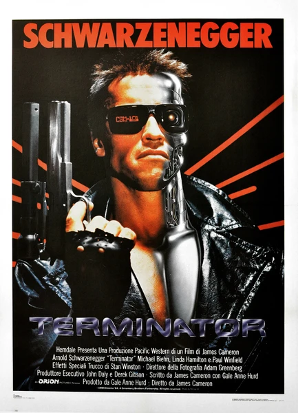

Фильм · 1984 · ИИ, Фантастика
В 2029 году машины, поработившие человечество, воюют с остатками людей. В прошлое отправляют киборга-убийцу, чтобы уничтожить мать будущего лидера сопротивления. Камерный триллер о самосознающем военном ИИ — история «Скайнета» начинается здесь.
In 2029 the machines that subjugated humanity are at war with the last survivors. A cyborg assassin is sent to the past to kill the mother of the future resistance leader. The low-budget thriller that gave birth to the myth of Skynet, a self-aware military AI.
← Вернуться в каталог IT Movies